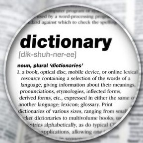

KAMUS TRIBAHASA
Sebuah website yang dapat memudahkan anda untuk mencari dan memilih kosakata antara Bahasa Indonesia, Bahasa Inggris, dan Bahasa Lampung. Disini anda dapat dengan mudah mencari dan memahami kosakata dari tiga bahasa yang berbeda.
Kelas Kata

NOMINA
kata yang menyatakan nama orang, tempat, atau semua benda dan segala yang dibendakan.
VERBA
kelas kata yang menyatakan suatu tindakan, keberadaan, pengalaman, atau pengertian dinamis lainnya.
ADJEKTIVA
kelas kata yang mengubah nomina atau pronomina, biasanya dengan menjelaskannya atau membuatnya menjadi lebih spesifik.
PREFIKS
Prefiks atau awalan adalah afiks yang ditambahkan pada bagian awal atau di depan suatu kata dasar.